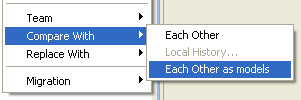
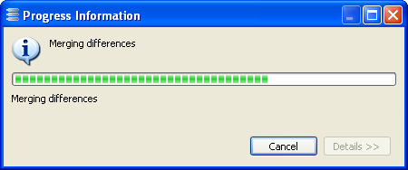
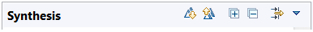

| Difference resolution in a nutshell | ||
|---|---|---|
|
|
|
|
| Basic Usage | Integration with Version Control | |
The EMF Diff/Merge GUI can be opened in Eclipse using the 'Compare With' - 'Each Other as models' contextual menu on files of the workspace.

The following buttons can be used to resolve differences.
Note that in some cases, performing a merge can take time especially if it is a global merge between large models. A progress bar is displayed during the operation.

Resolution of differences is considered to be finished when the content of the Synthesis section is empty, no significant difference is filtered out ('[filtered]' does not appear in the header of the Synthesis section) and changes have been saved by pressing Ctrl-S.

Note that the absence of visible differences does not mean that the left and right models are identical. It simply means that all differences have been considered by the user and either merged or explicitly ignored or filtered out.
|
|

|
|
| Basic Usage | Integration with Version Control |